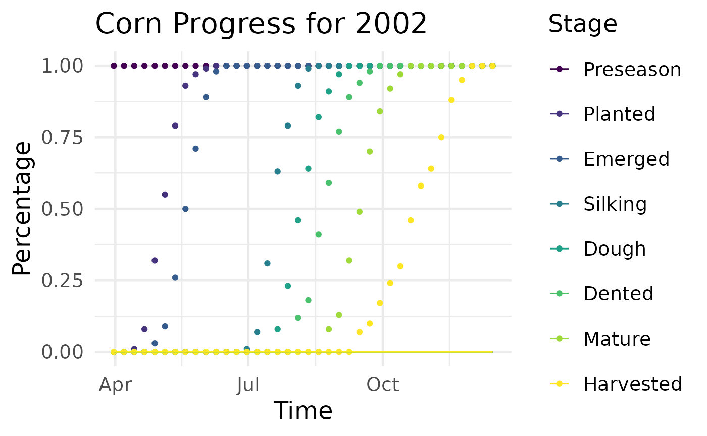
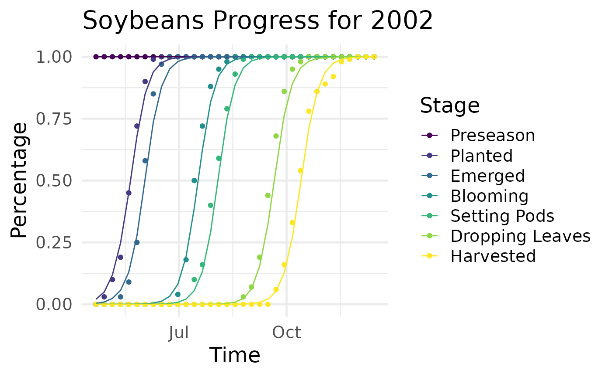
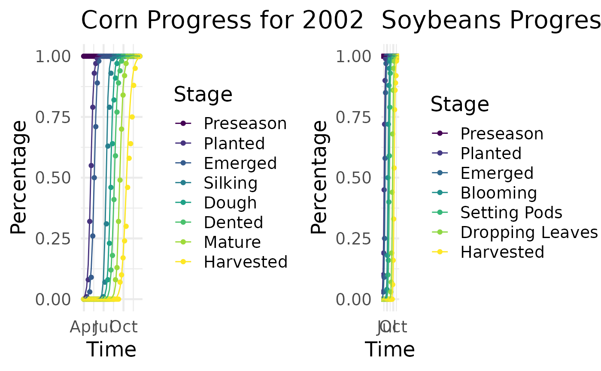

persephone
persephone.RmdOverview
This vignette contains general information on the package. It is intended to give the user a general picture of the package features, presenting the code architecture in a clear and concise way.
The package includes a dataset of the corn and soybeans progress in Nebraska for 20 seasons, from 2002 to 2021. The user can easily draw data from the Demeter database to create a different dataset. More details can be found in the cronus Github repository.
library(cronus)
library(persephone)
# Create a Region object
region <- Region(name = "nebraska", type = "us state",
div = c(country = "United States", state = "Nebraska"))
# Take a look at the data
head(progress_ne$Corn)
#> # A tibble: 6 × 20
#> Crop Stage Season Time Date CumPe…¹ Perce…² dayl gdd prcp srad
#> <chr> <ord> <dbl> <dbl> <date> <dbl> <dbl> <dbl> <dbl> <dbl> <dbl>
#> 1 Corn Pres… 2002 1 2002-03-31 1 1 44722. 0.0653 0.0267 386.
#> 2 Corn Plan… 2002 1 2002-03-31 0 0 44722. 0.0653 0.0267 386.
#> 3 Corn Emer… 2002 1 2002-03-31 0 0 44722. 0.0653 0.0267 386.
#> 4 Corn Silk… 2002 1 2002-03-31 0 0 44722. 0.0653 0.0267 386.
#> 5 Corn Dough 2002 1 2002-03-31 0 0 44722. 0.0653 0.0267 386.
#> 6 Corn Dent… 2002 1 2002-03-31 0 0 44722. 0.0653 0.0267 386.
#> # … with 9 more variables: swe <dbl>, vp <dbl>, ndvi_smooth_wt1 <dbl>,
#> # adayl <dbl>, agdd <dbl>, aprcp <dbl>, asrad <dbl>, aswe <dbl>, avp <dbl>,
#> # and abbreviated variable names ¹CumPercentage, ²PercentageModel Creation
The package is built using the S4 class system, offering simplicity
to new R users as well as ease of development to the project core team.
Functions require a single object that holds all the necessary
information concerning the model of interest. These objects are of class
PersephoneModel and can be concatenated into an object of
class PersephoneModelList.
# Create a model
object1 <- new("PersephoneQuasiBin",
region = region,
crop = "Corn",
data = progress_ne$Corn,
formula = "CumPercentage ~ Time + agdd") # PersephoneModel
# Create another model
object2 <- new("PersephoneCumLink",
region = region,
crop = "Soybeans",
data = progress_ne$Soybeans,
formula = "Stage ~ Time + agdd + adayl") # PersephoneModel
# Concatenate the models
object <- c(object1, object2) # PersephoneModelList
# Tools
get_crops(object)
#> Corn Soybeans
#> "Corn" "Soybeans"
get_region(object)
#> Corn Soybeans
#> "nebraska" "nebraska"
get_index(object, crop = "Corn")
#> Corn
#> 1
get_stages(object)
#> $Corn
#> [1] Preseason Planted Emerged Silking Dough Dented Mature
#> [8] Harvested
#> 8 Levels: Preseason < Planted < Emerged < Silking < Dough < ... < Harvested
#>
#> $Soybeans
#> [1] Preseason Planted Emerged Blooming
#> [5] Setting Pods Dropping Leaves Harvested
#> 7 Levels: Preseason < Planted < Emerged < Blooming < ... < Harvested
get_seasons(object)
#> $Corn
#> [1] 2002 2003 2004 2005 2006 2007 2008 2009 2010 2011 2012 2013 2014 2015 2016
#> [16] 2017 2018 2019 2020 2021
#>
#> $Soybeans
#> [1] 2002 2003 2004 2005 2006 2007 2008 2009 2010 2011 2012 2013 2014 2015 2016
#> [16] 2017 2018 2019 2020 2021Fitting
Fitting the object is straightforward with the function
fit(), which takes a PersephoneModel or
PersephoneModelList object and alters its
model and fitted slots.

Prediction
The function predict() can take an object that has
already been fitted and calculate the model predictions on a different
dataset.
predict(object, progress_ne)
#> $Corn
#> # A tibble: 6,080 × 20
#> Crop Season Time Date dayl gdd prcp srad swe vp ndvi_s…¹
#> <chr> <dbl> <dbl> <date> <dbl> <dbl> <dbl> <dbl> <dbl> <dbl> <dbl>
#> 1 Corn 2002 1 2002-03-31 44722. 0.0653 0.0267 386. 1.46 352. 2.32
#> 2 Corn 2002 1 2002-03-31 44722. 0.0653 0.0267 386. 1.46 352. 2.32
#> 3 Corn 2002 1 2002-03-31 44722. 0.0653 0.0267 386. 1.46 352. 2.32
#> 4 Corn 2002 1 2002-03-31 44722. 0.0653 0.0267 386. 1.46 352. 2.32
#> 5 Corn 2002 1 2002-03-31 44722. 0.0653 0.0267 386. 1.46 352. 2.32
#> 6 Corn 2002 1 2002-03-31 44722. 0.0653 0.0267 386. 1.46 352. 2.32
#> 7 Corn 2002 1 2002-03-31 44722. 0.0653 0.0267 386. 1.46 352. 2.32
#> 8 Corn 2002 1 2002-03-31 44722. 0.0653 0.0267 386. 1.46 352. 2.32
#> 9 Corn 2002 2 2002-04-07 45893. 0.107 0.821 286. 0.197 561. 2.51
#> 10 Corn 2002 2 2002-04-07 45893. 0.107 0.821 286. 0.197 561. 2.51
#> # … with 6,070 more rows, 9 more variables: adayl <dbl>, agdd <dbl>,
#> # aprcp <dbl>, asrad <dbl>, aswe <dbl>, avp <dbl>, Stage <ord>,
#> # CumPercentage <dbl>, Percentage <dbl>, and abbreviated variable name
#> # ¹ndvi_smooth_wt1
#>
#> $Soybeans
#> # A tibble: 4,900 × 20
#> Crop Stage Season Time Date CumPer…¹ Percen…² dayl gdd prcp
#> <chr> <ord> <dbl> <dbl> <date> <dbl> <dbl> <dbl> <dbl> <dbl>
#> 1 Soybeans Prese… 2002 1 2002-04-21 1 e+ 0 9.79e- 1 48166. 0.0964 0.759
#> 2 Soybeans Plant… 2002 1 2002-04-21 2.07e- 2 1.69e- 2 48166. 0.0964 0.759
#> 3 Soybeans Emerg… 2002 1 2002-04-21 3.81e- 3 3.81e- 3 48166. 0.0964 0.759
#> 4 Soybeans Bloom… 2002 1 2002-04-21 6.63e- 6 6.02e- 6 48166. 0.0964 0.759
#> 5 Soybeans Setti… 2002 1 2002-04-21 6.08e- 7 6.07e- 7 48166. 0.0964 0.759
#> 6 Soybeans Dropp… 2002 1 2002-04-21 6.95e-10 6.63e-10 48166. 0.0964 0.759
#> 7 Soybeans Harve… 2002 1 2002-04-21 3.13e-11 3.13e-11 48166. 0.0964 0.759
#> 8 Soybeans Prese… 2002 2 2002-04-28 1 e+ 0 9.50e- 1 49235. 0.182 0.412
#> 9 Soybeans Plant… 2002 2 2002-04-28 4.95e- 2 4.02e- 2 49235. 0.182 0.412
#> 10 Soybeans Emerg… 2002 2 2002-04-28 9.35e- 3 9.33e- 3 49235. 0.182 0.412
#> # … with 4,890 more rows, 10 more variables: srad <dbl>, swe <dbl>, vp <dbl>,
#> # ndvi_smooth_wt1 <dbl>, adayl <dbl>, agdd <dbl>, aprcp <dbl>, asrad <dbl>,
#> # aswe <dbl>, avp <dbl>, and abbreviated variable names ¹CumPercentage,
#> # ²PercentageEvaluation
The evaluation of a model can be achieved with the
crossval() function, which performs Monte-Carlo (or
leave-group-out) cross validation and alters the object’s
metrics slots.
object <- crossval(object, maxsam = 100, seed = 1)
plot_metrics(object)
Summary
Function summary() can be used to get a brief
presentation of the object.
summary(object)
#> General Information
#>
#> Region: nebraska
#> Crop: Corn
#> Formula: CumPercentage ~ Time + agdd
#>
#> --------------------------------------------------
#>
#> Stage: Preseason
#>
#> Call:
#> glm(formula = object@formula, family = stats::quasibinomial(link = object@link),
#> data = data_stage, weights = weights)
#>
#> Deviance Residuals:
#> Min 1Q Median 3Q Max
#> 2.107e-07 2.107e-07 2.107e-07 2.107e-07 2.107e-07
#>
#> Coefficients:
#> Estimate Std. Error t value Pr(>|t|)
#> (Intercept) 3.031e+01 7.626e-02 397.5 <2e-16 ***
#> Time 1.314e-09 1.374e-02 0.0 1
#> agdd -1.150e-09 2.851e-02 0.0 1
#> ---
#> Signif. codes: 0 '***' 0.001 '**' 0.01 '*' 0.05 '.' 0.1 ' ' 1
#>
#> (Dispersion parameter for quasibinomial family taken to be 1.871151e-11)
#>
#> Null deviance: 0.0000e+00 on 759 degrees of freedom
#> Residual deviance: 3.3751e-11 on 757 degrees of freedom
#> AIC: NA
#>
#> Number of Fisher Scoring iterations: 25
#>
#> --------------------------------------------------
#>
#> Stage: Planted
#>
#> Call:
#> glm(formula = object@formula, family = stats::quasibinomial(link = object@link),
#> data = data_stage, weights = weights)
#>
#> Deviance Residuals:
#> Min 1Q Median 3Q Max
#> -8.7769 0.0000 0.0007 0.0768 9.3890
#>
#> Coefficients:
#> Estimate Std. Error t value Pr(>|t|)
#> (Intercept) -6.19860 0.17092 -36.266 <2e-16 ***
#> Time 1.14698 0.05762 19.908 <2e-16 ***
#> agdd -0.25097 0.15619 -1.607 0.109
#> ---
#> Signif. codes: 0 '***' 0.001 '**' 0.01 '*' 0.05 '.' 0.1 ' ' 1
#>
#> (Dispersion parameter for quasibinomial family taken to be 3.261797)
#>
#> Null deviance: 50564.0 on 759 degrees of freedom
#> Residual deviance: 2081.7 on 757 degrees of freedom
#> AIC: NA
#>
#> Number of Fisher Scoring iterations: 9
#>
#> --------------------------------------------------
#>
#> Stage: Emerged
#>
#> Call:
#> glm(formula = object@formula, family = stats::quasibinomial(link = object@link),
#> data = data_stage, weights = weights)
#>
#> Deviance Residuals:
#> Min 1Q Median 3Q Max
#> -6.6953 0.0000 0.0001 0.0274 9.7855
#>
#> Coefficients:
#> Estimate Std. Error t value Pr(>|t|)
#> (Intercept) -7.93476 0.21441 -37.007 < 2e-16 ***
#> Time 0.89249 0.05324 16.765 < 2e-16 ***
#> agdd 0.52956 0.12354 4.287 2.05e-05 ***
#> ---
#> Signif. codes: 0 '***' 0.001 '**' 0.01 '*' 0.05 '.' 0.1 ' ' 1
#>
#> (Dispersion parameter for quasibinomial family taken to be 2.654222)
#>
#> Null deviance: 63542 on 759 degrees of freedom
#> Residual deviance: 1797 on 757 degrees of freedom
#> AIC: NA
#>
#> Number of Fisher Scoring iterations: 8
#>
#> --------------------------------------------------
#>
#> Stage: Silking
#>
#> Call:
#> glm(formula = object@formula, family = stats::quasibinomial(link = object@link),
#> data = data_stage, weights = weights)
#>
#> Deviance Residuals:
#> Min 1Q Median 3Q Max
#> -8.8360 -0.0770 0.0009 0.0386 9.5608
#>
#> Coefficients:
#> Estimate Std. Error t value Pr(>|t|)
#> (Intercept) -16.67080 0.44724 -37.27 <2e-16 ***
#> Time 0.66750 0.05228 12.77 <2e-16 ***
#> agdd 0.82552 0.07327 11.27 <2e-16 ***
#> ---
#> Signif. codes: 0 '***' 0.001 '**' 0.01 '*' 0.05 '.' 0.1 ' ' 1
#>
#> (Dispersion parameter for quasibinomial family taken to be 2.047128)
#>
#> Null deviance: 93896.2 on 759 degrees of freedom
#> Residual deviance: 1442.6 on 757 degrees of freedom
#> AIC: NA
#>
#> Number of Fisher Scoring iterations: 7
#>
#> --------------------------------------------------
#>
#> Stage: Dough
#>
#> Call:
#> glm(formula = object@formula, family = stats::quasibinomial(link = object@link),
#> data = data_stage, weights = weights)
#>
#> Deviance Residuals:
#> Min 1Q Median 3Q Max
#> -9.2571 -0.2060 -0.0043 0.1129 6.7577
#>
#> Coefficients:
#> Estimate Std. Error t value Pr(>|t|)
#> (Intercept) -17.35836 0.33518 -51.789 <2e-16 ***
#> Time 0.67652 0.03315 20.409 <2e-16 ***
#> agdd 0.46895 0.04884 9.602 <2e-16 ***
#> ---
#> Signif. codes: 0 '***' 0.001 '**' 0.01 '*' 0.05 '.' 0.1 ' ' 1
#>
#> (Dispersion parameter for quasibinomial family taken to be 2.006412)
#>
#> Null deviance: 93294.8 on 759 degrees of freedom
#> Residual deviance: 1374.4 on 757 degrees of freedom
#> AIC: NA
#>
#> Number of Fisher Scoring iterations: 7
#>
#> --------------------------------------------------
#>
#> Stage: Dented
#>
#> Call:
#> glm(formula = object@formula, family = stats::quasibinomial(link = object@link),
#> data = data_stage, weights = weights)
#>
#> Deviance Residuals:
#> Min 1Q Median 3Q Max
#> -8.7325 -0.1944 -0.0040 0.1664 7.0836
#>
#> Coefficients:
#> Estimate Std. Error t value Pr(>|t|)
#> (Intercept) -19.29789 0.32756 -58.91 <2e-16 ***
#> Time 0.66046 0.02493 26.49 <2e-16 ***
#> agdd 0.45780 0.04135 11.07 <2e-16 ***
#> ---
#> Signif. codes: 0 '***' 0.001 '**' 0.01 '*' 0.05 '.' 0.1 ' ' 1
#>
#> (Dispersion parameter for quasibinomial family taken to be 2.026526)
#>
#> Null deviance: 91405.6 on 759 degrees of freedom
#> Residual deviance: 1443.6 on 757 degrees of freedom
#> AIC: NA
#>
#> Number of Fisher Scoring iterations: 7
#>
#> --------------------------------------------------
#>
#> Stage: Mature
#>
#> Call:
#> glm(formula = object@formula, family = stats::quasibinomial(link = object@link),
#> data = data_stage, weights = weights)
#>
#> Deviance Residuals:
#> Min 1Q Median 3Q Max
#> -7.5626 -0.1557 -0.0019 0.2545 8.0087
#>
#> Coefficients:
#> Estimate Std. Error t value Pr(>|t|)
#> (Intercept) -23.43785 0.37736 -62.11 <2e-16 ***
#> Time 0.70434 0.01617 43.56 <2e-16 ***
#> agdd 0.43320 0.03249 13.33 <2e-16 ***
#> ---
#> Signif. codes: 0 '***' 0.001 '**' 0.01 '*' 0.05 '.' 0.1 ' ' 1
#>
#> (Dispersion parameter for quasibinomial family taken to be 1.812851)
#>
#> Null deviance: 83938.8 on 759 degrees of freedom
#> Residual deviance: 1394.3 on 757 degrees of freedom
#> AIC: NA
#>
#> Number of Fisher Scoring iterations: 7
#>
#> --------------------------------------------------
#>
#> Stage: Harvested
#>
#> Call:
#> glm(formula = object@formula, family = stats::quasibinomial(link = object@link),
#> data = data_stage, weights = weights)
#>
#> Deviance Residuals:
#> Min 1Q Median 3Q Max
#> -7.3081 -0.2838 -0.0081 -0.0002 8.8833
#>
#> Coefficients:
#> Estimate Std. Error t value Pr(>|t|)
#> (Intercept) -22.79576 0.43843 -51.99 <2e-16 ***
#> Time 0.58845 0.01104 53.32 <2e-16 ***
#> agdd 0.37036 0.02904 12.76 <2e-16 ***
#> ---
#> Signif. codes: 0 '***' 0.001 '**' 0.01 '*' 0.05 '.' 0.1 ' ' 1
#>
#> (Dispersion parameter for quasibinomial family taken to be 2.432584)
#>
#> Null deviance: 63046.0 on 759 degrees of freedom
#> Residual deviance: 1975.8 on 757 degrees of freedom
#> AIC: NA
#>
#> Number of Fisher Scoring iterations: 7
#>
#> ======================================================================
#>
#> General Information
#>
#> Region: nebraska
#> Crop: Soybeans
#> Formula: Stage ~ Time + agdd + adayl
#> Nominal: ~ 1
#> Scale: ~ 1
#>
#> link threshold nobs logLik AIC niter max.grad cond.H
#> 1 logit flexible 700 -376.67 771.34 8(0) 2.40e-07 2.9e+05
#>
#> Absolute and relative convergence criteria were met
#>
#> --------------------------------------------------
#>
#> Model Coefficients
#> Estimate Std. Error z value
#> Preseason|Planted.(Intercept) 4.7496724 0.4290620 11.0698987
#> Planted|Emerged.(Intercept) 6.4580107 0.5059046 12.7652736
#> Emerged|Blooming.(Intercept) 12.8168421 0.9115212 14.0609375
#> Blooming|Setting Pods.(Intercept) 15.2055822 1.0158461 14.9683920
#> Setting Pods|Dropping Leaves.(Intercept) 21.9804524 1.2912971 17.0219948
#> Dropping Leaves|Harvested.(Intercept) 25.0807440 1.3761354 18.2254914
#> Time 0.9878483 0.4325537 2.2837585
#> agdd 0.1346854 0.1631718 0.8254208
#> adayl -0.2242773 0.9870257 -0.2272254
#> Pr(>|z|)
#> Preseason|Planted.(Intercept) 1.755990e-28
#> Planted|Emerged.(Intercept) 2.562486e-37
#> Emerged|Blooming.(Intercept) 6.600594e-45
#> Blooming|Setting Pods.(Intercept) 1.181433e-50
#> Setting Pods|Dropping Leaves.(Intercept) 5.641547e-65
#> Dropping Leaves|Harvested.(Intercept) 3.239526e-74
#> Time 2.238572e-02
#> agdd 4.091327e-01
#> adayl 8.202485e-01
#>
#> --------------------------------------------------
#>
#> Tests of nominal effects
#>
#> formula: Stage ~ Time + agdd + adayl
#> scale: ~1
#> nominal: ~1
#> Df logLik AIC LRT Pr(>Chi)
#> <none> -376.67 771.34
#> Time
#> agdd
#> adayl
#>
#> --------------------------------------------------
#>
#> Tests of scale effects
#>
#> formula: Stage ~ Time + agdd + adayl
#> scale: ~1
#> nominal: ~1
#> Df logLik AIC LRT Pr(>Chi)
#> <none> -376.67 771.34
#> Time 1 -375.55 771.10 2.2370 0.1347
#> agdd 1 -375.62 771.24 2.0940 0.1479
#> adayl 1 -375.49 770.97 2.3651 0.1241
#>
#> ======================================================================